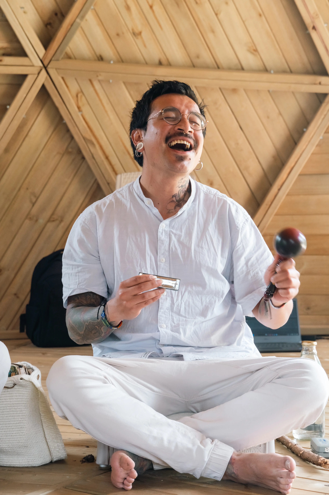
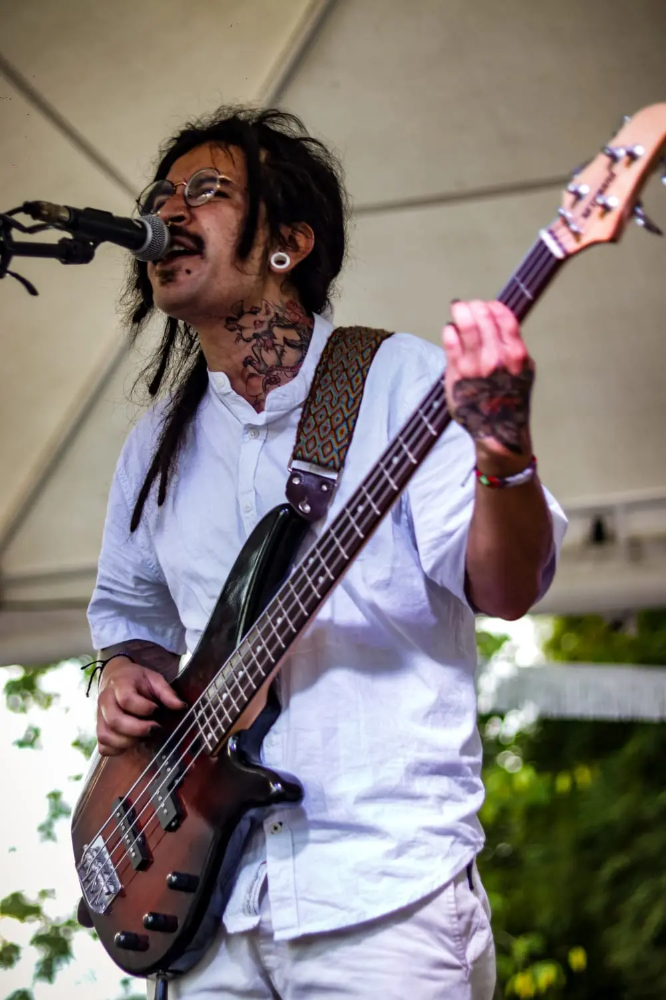
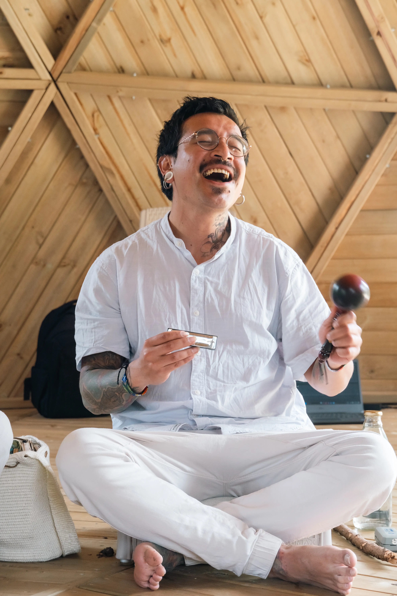
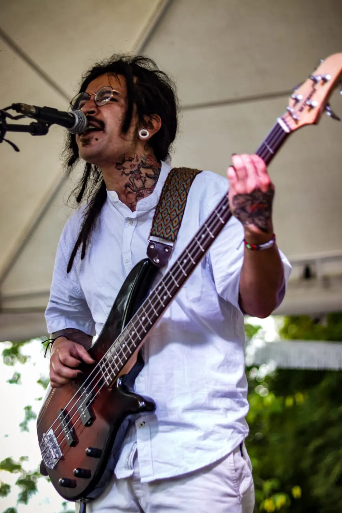

¿A qué me dedico?
Carlos Andrés Mesa Alarcón es mi nombre de pila, por más de diez años me he dedicado a aprender, a explorar la música y la escritura de forma empírica y autodidacta, a ser maestro aprendiz de las artes del buen vivir y la espiritualidad, a estudiar psicología en la Universidad Nacional Abierta y a Distancia UNAD. La experiencia vivida, las medicinas, los alimentos de nuestra madre Tierra, las enseñanzas de la familia, de los seres con los que me he cruzado, de nuestros hermanos animales, siendo maestras y maestros; los libros, la academia, la espiritualidad… me han permitido comprender e integrar conceptos que dan paso a claridades que nos ayudan a caminar en conciencia y tranquilidad, a gusto con lo que somos, con lo que hacemos. Uno de los sucesos mágicos de la vida es que podemos aprender y desaprender en cualquier momento, el aprendizaje no termina nunca. Mientras respire, seguiré cultivando y compartiendo herramientas que nos ayuden a vivir en paz, en conciencia y gratitud.
Conozca más quien es Carlos el gatoMi Musica
Entre los aspectos sonoros y estéticos de mis conciertos, podemos encontrar armonías alegres, dulces, con cambios de ritmo (reggae, Hip-Hop, balada…) creando atmósferas propicias para el juego y la danza. Provocando sentires reflexivos, emociones de alegría gratitud, disfrute… Podría clasificarse entre música urbana y música medicina; sin embargo, mi música ahonda en las heridas, en la sombra que nos habita para aceptarla y abrazarla, sin juicios, y sentir con sus letras que es posible vivir un camino de esperanza, de empoderamiento unión y amor. Mi música expresa con humildad y franqueza un mensaje consiente y amoroso en un lenguaje cotidiano, fácil de entender, apto para todas las edades.
“La riqueza es también hacer lo que amamos y a través de ello servir a nuestra madre Tierra y a nuestros hermanos; del mismo modo, es lo que hacemos a diario para ser mejores seres humanos”. Conozca más Mi Musica